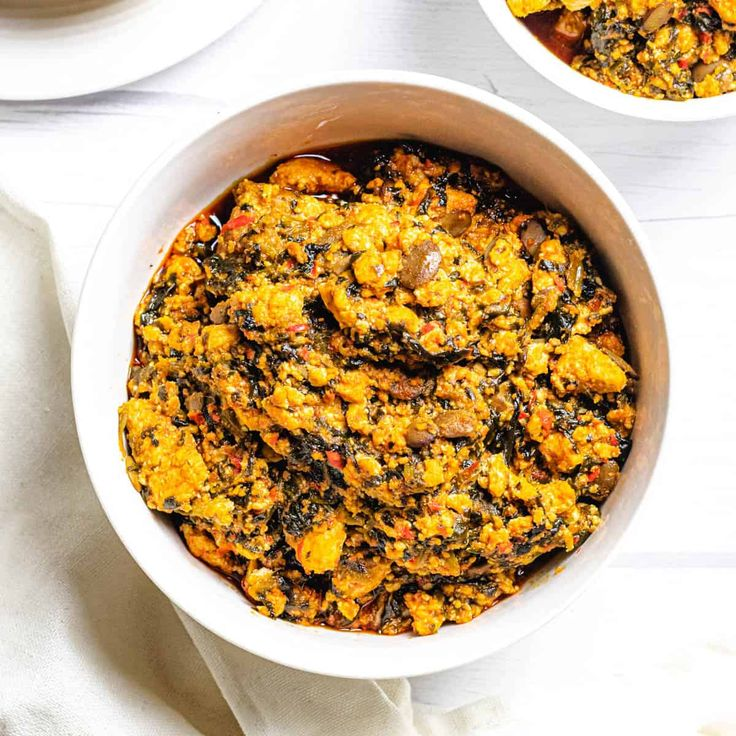

EGUSI

DESCRIPTION
Egusi soup stands out with its rich flavours and cultural significance. This delectable dish, made with ground melon seeds, various vegetables, and a blend of aromatic spices, holds a special place in the hearts and taste buds of Nigerians. In this article, we’ll take you on a culinary journey through the steps of preparing an authentic Nigerian Egusi Soup that will leave your taste buds dancing and your cravings satisfied.
INGREDIENTS
- 2 cups of Egusi (melon) seeds, ground
- 2 cups of assorted meats (chicken, beef, or goat meat), cooked and roasted
- 2 cups of spinach chopped
- 1 cup of palm oil
- 2 medium-sized onion, finely chopped
- 4 scotch bonnets
- 2 chilli peppers
- 2 long bell peppers/tatshe
- Dry Catfish (Optional)
- 4 cups of stock or water
- Spices for Egusi
- 1 teaspoon of iru (locust beans, optional)
- Seasoning cube
- Salt
- 2 tablespoons of ground crayfish
- 2 teaspoons of Cameroon pepper